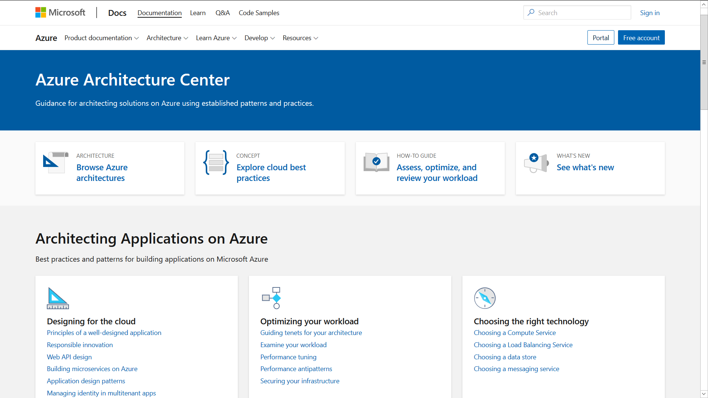

Microsoft Azure Architect Design is the second exam required for obtaining Azure Solutions Architect Expert certification. Backed up by deployment and configuration skills, obtained from preparation for Microsoft Azure Architect Technologies exam, we will tackle design of more complex and robust systems in this part.
This post is part of my Azure Architect certification guide:
- So you want to be an Azure Solutions Architect Expert - Part 1
- So you want to be an Azure Solutions Architect Expert - Part 2 (this post)
Disclaimer: on June 29, AZ-303 and AZ-304 were released, but only as beta for the time being. Exams being replaced, i.e. AZ-300 and AZ-301, will retire on September 30. I will take into account AZ-304 curriculum, and not dwell on AZ-301 topics that are becoming obsolete.
So you want to Solution Architect (AZ-301: Microsoft Azure Architect Design)
Armed with knowledge of individual Azure services, design exam puts it all together under one roof. As a solution architect it will be your responsibility to create systems fulfilling both functional and non-functional requirements, while taking care not to overstep established restrictions. Desired reliability, availability, scalability and costs heavily influence your architecture and components used, hence a much deeper understanding of Azure services is required.
What type of design questions await
Question formats do not diverge much from the ones mentioned in previous post. You should however expect many more case-studies, which best suit to illustrate obstacles confronted by a system designer.
Where to find study materials

The same can be said for study materials. Microsoft documentation and video courses I previously suggested offer more than enough information needed to pass design exam as well. Special significance should be paid to Azure architecture section, containing reference architectures for different types of deployments. I suggest studying most commonly used ones by analyzing individual components and how they fit together to achieve desired system requirements.
Availability

Understanding how Azure datacenters are organized on a global scale is imperative when planning for availability of your deployment. Although Microsoft offers generous SLA for all of its services, outages happen, and careful planning can help you mitigate such interruptions. Most important terms, covered by design exam, include:
- Datacenter. Basic building block of Azure, consisting of physical devices, storage, power and network connections.
- Availability zone. Collection of one or more datacenters with independent power and network connections. Most Azure resources can be distributed between different availability zones, helping against individual datacenter outages.
- Region. Specific location where Azure resources are deployed, guaranteeing compliance and data residency for specific state or country where datacenters are located. With regard to availability zones, each region contains at least 3 of them.
- Regional pair. Each Azure region is paired with another one, with prescribed minimum distance between them. This ensures resiliency in case of regional outages, due to natural disasters or any similar impediments. Any service update is rolled to one region per pair at a time. Also, in case of global Azure outage, Microsoft will prioritize restoring only one region per pair.
- Geography. Regions belonging to the same country are organized into geographies. Any regional pair is usually a part of the same geography, ensuring compliance and data residency. Exceptions do exists, especially for new geographies where usually only one region is deployed.
Besides knowing how outage in any part of Azure infrastructure could affect you, it is vital to understand where each type of resources is deployed. While most of them are being deployed to specific regions, some of them, e.g. Traffic Manager, are non-regional and are deployed globally. Knowing which services allow distribution into availability zones, in order to handle datacenter outages, is also required.
Reliability
When designing backup and recovery solution, it is imperative to take into account target Recovery Time Objectives (RTO) and Recovery Point Objectives (RPO). Simply put, they both impose requirements on how your system should behave in case of an outage. While RTO determines maximum period of time an outage is allowed to last, RPO specifies permitted amount of data loss during recovery. For critical system components these values would normally be expressed in seconds, while rarely used or obsolete parts could afford even daily outages. Values imposed by these requirements have great impact not only during recovery design, but also when optimizing costs, which I will cover in the following sections.
To successfully conquer this part of the exam, deeper understanding of two services is required:
- Azure Backup. As the name implies, the service is used for managing backups of other services, be it Azure VM disks, on-premise file systems or SQL servers running on Azure VMs. Although you should be familiar with configuring and deploying it from technologies exam, understanding costs and data retention specifics will be required on design exam.
- Azure Site Recovery. This one is a complex hydra, since it can span multiple Azure regions and even handle on-premise systems connected via VPN. It heavily relies on Backup service and removes the need for manual intervention in case of a failure. I recommend spending some time trying out Site Recovery in Azure Portal, if you have a chance. How to identify failure (both infrastructure and application), how to recover to a secondary deployment (both Azure and on-premise) and how to minimize amount of lost data and downtime (RPO and RTO) are just some of the areas you will need to be proficient in. Luckily, Site Recovery allows manual failovers, allowing you to test and get a good grip on what can happen in case of a system failure.
Scalability

Most compute and database resources, offered by Azure, support scaling out of the box. The trick is knowing which service tier you have to use for specific resource type, as well how to effectively configure scaling to support increase of demand. Whether you are using VM scale sets or App Service, knowing how to configure auto-scaling rules and conditions is a must. Even services such as Function App, which inherently handle scaling, support further adjustments to it. This can be used to control burst of work and better handle costs of potentially unlimited compute resources.
All previously mentioned areas (availability, reliability and scalability) represent pillars of any highly available and resilient deployment. I would once again emphasize the importance of Azure architecture documentation, which is an endless pool of reference architectures, allowing building systems fulfilling specific set of requirements.
Security
As with any cloud environment, security is involved in almost all of Azure’s components and processes. For the purpose of design exam, I would divide security topics into following:
- User management, authentication and authorization. Beside knowing how to work with Azure AD and role-based access control (RBAC), which were covered in technologies exam, you will be expected to handle more advanced scenarios and options offered by Azure AD. Configuring single-sign on (SSO), multi-factor authentication (MFA) and dealing with hybrid identity using Azure AD Connect are just some of the examples. As you are expected to handle enterprise level deployments, automating and auditing certain tasks will be a necessity. Hence premium AD options such as Privileged Identity Management (PIM), self-service management, Identity Protection and Just In Time (JIT) VM access should not flow under your radar.
- Application security. Securing our compute resources comes in two flavours: handling service access to other Azure resources and protecting application data. While Managed Identity can handle service authentication, using service principals and RBAC, Azure Key Vault is usually used for storing sensitive application settings and certificates.
- Data protection. As our systems will deal with user data, it is imperative for all of its components to safeguard it. By designing a system that encrypts data at rest, in transit and while in use we can minimize the possibility and impact of data exposure. Knowing how different resources, based on their purpose, handle each part of data flow is a key to conquering these problems.
Cost optimization
First step into providing good cost optimization is knowing when and how are you charged for using Azure resources. Although some costs are fixed, e.g each GB stored, VM reserved, certificate purchased and public IP address assigned, others are charged per usage unit, such as FunctionApp and Container Instances execution time, number of read/write requests to storage accounts and Cosmos DB request units, just to name a few. Different service tiers can also dramatically affect costs of entire deployment, due to extra features offered and more strict SLAs. No one will expect of you to provide exact price of deployment, but knowing how to reduce costs, while still adhering to requirements imposed, will be vital.
In case of designing for reliability, you will mostly be faced with task of minimizing deployment cost, while maintaining specific RTO and RLO values. Knowing how each storage resource (Cosmos DB, blob and file storage) and recovery service (Site Recovery and Backup) handles these parameters is a skill you will have to master.
Governance and auditing
All parts of an enterprise must be compliant with pre-established rules, which does not exempt deployments made to Azure. Governance in Azure further includes creating and adhering completely new set of rules, specific for cloud environment. As an example, you could be tasked with designing resource tagging policy, in order to help identify business unit, application or employees responsible for specific resource or groups of resources.
In order to ensure all deployed resources are compliant, Azure allows us to define policies for different scopes, i.e directory, subscription, resource group, etc. This goes even beyond deployments, as policy rules can be applied to user accounts, RBAC and other security entities governed by Azure AD. Azure Blueprints makes work with policies more straightforward, giving us possibility to define compliant resource templates ready for deployment. Blueprints go much further than simple ARM templates, as they are backed up by Cosmos DB, available to any user or group with access rights, and provide audit log upon deployment.
Miscellaneous
I will briefly cover further topics encountered during exam, that are not as extensive as previously mentioned ones.
Networking
Since virtual networks are ties that bind all other Azure resources, knowing how to design and utilize them is something that can not be overlooked. As they fall within the competence of Microsoft, you will have little influence over their operation and reliability. However, architect’s responsibility lay in other areas. Modeling addressing strategy for networks and sub-networks, connecting virtual networks and on-premise systems, directing network flow via routing and load balancers, as well as establishing security boundaries and rules are just some of the skills that will be expected of you on design exam.
Compute
Similar skills to ones required in technical exam are required, as choosing appropriate compute solution is still the main focus. There will however be additional requirements, requiring deeper knowledge of pricing tiers and respective offerings, total resource costs as well as scaling capabilities. Resource types covered by design exam are virtual machines, virtual machine scale sets, App Services, Service Fabric, Function Apps and containerized deployments. Regarding last one, make sure you understand difference between Azure Kubernetes Service and Azure Container Instances.
Archiving and data retention
Storing not-frequently accessed data for auditing and compliance purposes is a necessity by today’s standards. Almost all Azure storage services include an archive tier, so you should be covered whether you are using Storage Accounts, Data Lake or Azure Backup, just to name a few. You would still need to know how to calculate the costs of archiving data, as well as special conditions for storing and accessing it.
Conclusion
In this post I described most important topics that are covered by AZ-301: Microsoft Azure Architect Design exam. Including previous post in the series, I have covered complete curriculum for Azure Solutions Architect Expert exam in its current form.
If you would have any additional questions or remarks, I am eager to hear them in the comments bellow. If you are interested in future posts from Azure and .NET world, follow me on Twitter to get notified as soon as they get published.
Comments